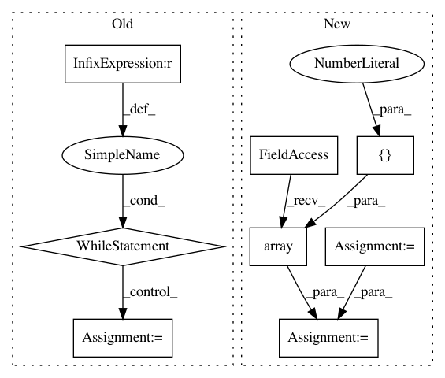

dccb5015ca3443c490aa4f1100892b0bfb5f957b,geomstats/riemannian_metric.py,RiemannianMetric,mean,#RiemannianMetric#Any#Any#Any#Any#Any#,241
Before Change
sq_dists_between_iterates = []
iteration = 0
while iteration < n_max_iterations:
a_tangent_vector = self.log(mean, mean)
tangent_mean = gs.zeros_like(a_tangent_vector)
logs = self.log(point=points, base_point=mean)
tangent_mean += gs.einsum("nk,nj->j", weights, logs)
tangent_mean /= sum_weights
mean_next = self.exp(
tangent_vec=tangent_mean,
base_point=mean)
sq_dist = self.squared_dist(mean_next, mean)
sq_dists_between_iterates.append(sq_dist)
variance = self.variance(points=points,
weights=weights,
base_point=mean_next)
if gs.isclose(variance, 0.)[0, 0]:
break
if (sq_dist <= epsilon * variance)[0, 0]:
break
mean = mean_next
iteration += 1
if iteration is n_max_iterations:
print("Maximum number of iterations {} reached."
"The mean may be inaccurate".format(n_max_iterations))
After Change
mean = points[0]
if point_type == "vector":
mean = gs.to_ndarray(mean, to_ndim=2)
if point_type == "matrix":
mean = gs.to_ndarray(mean, to_ndim=3)
if n_points == 1:
return mean
sq_dists_between_iterates = []
iteration = 0
sq_dist = gs.array([[0.]])
variance = gs.array([[0.]])
//iteration = gs.constant(0)
def while_loop_body(iteration, mean, variance, sq_dist):
tangent_mean = gs.zeros_like(mean)
logs = self.log(point=points, base_point=mean)
tangent_mean += gs.einsum("nk,nj->j", weights, logs)
tangent_mean /= sum_weights
mean_next = self.exp(
tangent_vec=tangent_mean,
base_point=mean)
sq_dist = self.squared_dist(mean_next, mean)
sq_dists_between_iterates.append(sq_dist)
variance = self.variance(points=points,
weights=weights,
base_point=mean_next)
mean = mean_next
iteration += 1
return [iteration, mean, variance, sq_dist]
def while_loop_cond(iteration, mean, variance, sq_dist):
result = gs.logical_or(
gs.isclose(variance, 0.),
gs.less_equal(sq_dist, epsilon * variance))
return result[0, 0]
last_iteration, mean, variance, sq_dist = gs.while_loop(
lambda i, m, v, sq: while_loop_cond(i, m, v, sq),
lambda i, m, v, sq: while_loop_body(i, m, v, sq),
loop_vars=[iteration, mean, variance, sq_dist],
maximum_iterations=n_max_iterations)
//while iteration < n_max_iterations:
// if gs.isclose(variance, 0.)[0, 0]:
// break
In pattern: SUPERPATTERN
Frequency: 3
Non-data size: 8
Instances
Project Name: geomstats/geomstats
Commit Name: dccb5015ca3443c490aa4f1100892b0bfb5f957b
Time: 2018-12-31
Author: ninamio78@gmail.com
File Name: geomstats/riemannian_metric.py
Class Name: RiemannianMetric
Method Name: mean
Project Name: geomstats/geomstats
Commit Name: 01673d1a6dcb41a20e19f951ee450c44c07aeafd
Time: 2019-06-16
Author: ninamio78@gmail.com
File Name: geomstats/riemannian_metric.py
Class Name: RiemannianMetric
Method Name: mean
Project Name: facebookresearch/Horizon
Commit Name: 09e72f2042e26725632082d93df70cbc86071d38
Time: 2020-05-13
Author: kittipat@fb.com
File Name: reagent/gym/tests/preprocessors/test_replay_buffer_inserters.py
Class Name: TestBasicReplayBufferInserter
Method Name: test_cartpole